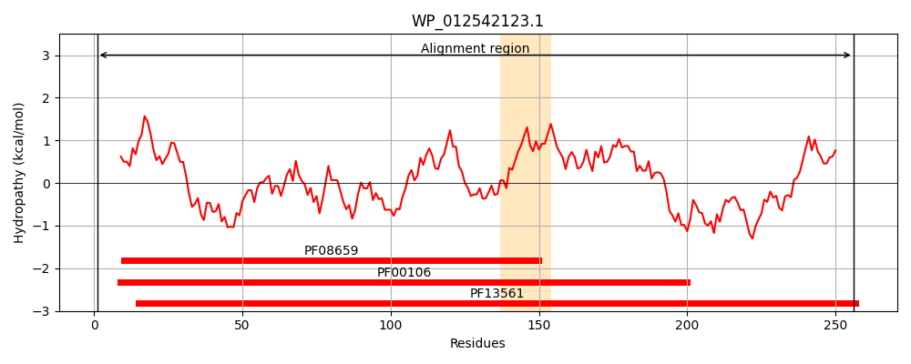
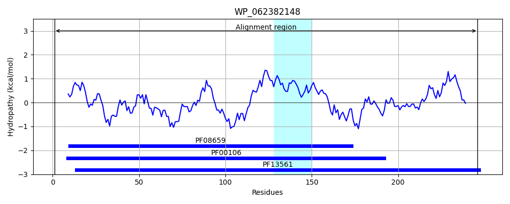
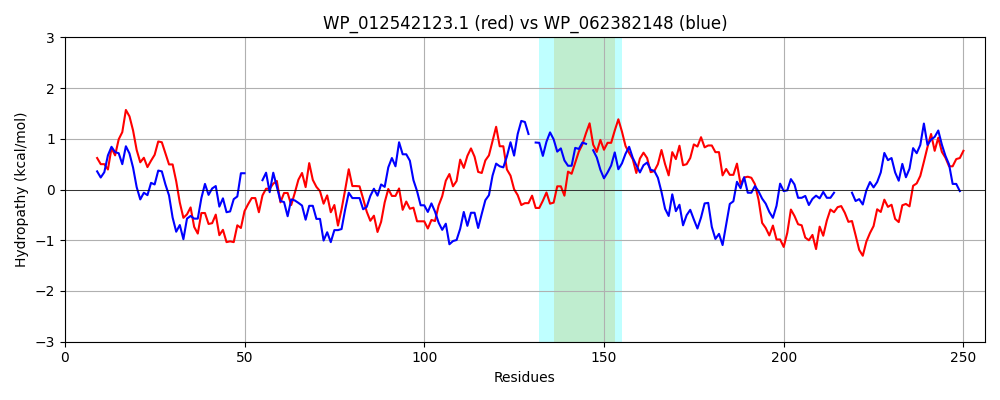

Hit Accession: WP_062382148
Hit TCID: 1.A.115.1.5
Hit Description: gnl|BL_ORD_ID|21287 gnl|TC-DB|WP_062382148.1|1.A.115.1.5 SDR family oxidoreductase [Pseudomonas abietaniphila]
Mach Len: 256
e:0.000000
Query TMS Count : 1
Hit TMS Count: 1
TMS-Overlap Score: 0.700000
Predicted Substrates:None
BLAST Alignment:
Score: 244 , Bit scores: 98 bits, E-value: 9.1e-25, Alignment length: 256, Percentage identity: 29
Query: 1 MNLQIQQRVALVCGAGSGLGQAIACSLAQEGVKVAVTGRNREKLAQTVERITQLGGTARAWPLDFAVPEQFDTVIADIREHWGDIDILVNNSGGPPPTLAQGTDGAVWQQQFSVMVASLIQLTDKLLPAMRSRGWGRIITSTSSGVIAPIPGLALSNALRMSLLGWSKTLAAEVAADGVTVNVMVPGRIATDRVGQLDAIKAKREHSTAEAVAEKSRLSIPAGRYGHPHEYGATAAFLASQPASYITGAVIRVDGG 256
M +++ ++ALV G +G+G A A A+EG V +TGR + +L V R+ G A +D EQ D + I G +D+L N+GG A +Q F V ++ K LP + ++G I+T +++G + ++ A + ++ +++ ++ V VN + PG T + L A ++ + +A + IP GR G P E A A FLAS AS++ G + VDGG
Sbjct: 1 MARKLEGKIALVTGGTTGIGLATAKRFAEEGAYVYITGRRQAELDAAVARV----GNATGVQVDSTNLEQLDALYRQIGTEKGRLDVLFANAGGGSMLPLGDITEAQYQDTFDRNVKGVLFTVQKALPLL-AKGASVILTGSTAGS-SGTAAFSVYAASKAAVRAFARNWILDLKDRNVRVNTLSPGATRTPGLVDLAGPDAAQQQGLLDYLASQ----IPMGRVGEPEEIAAAALFLASDDASFVNGIELFVDGG 246 | Protein Hydropathy Plots: |
|---|
|  |  |
Pairwise Alignment-Hydropathy Plot:
|
|---|
|  |